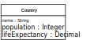

In most parts of the following projects you can follow, or even copy, the code of the book data management app presented in this chapter. Like in the book data management app, you can make the simplifying assumption that all the data can be kept in main memory. So, on application start up, the data is read from the persistent data store. When the user quits the application, the data has to be saved to the persistent data store, which should be implemented with JavaScript's Local Storage API, as shown in this chapter, or with the more powerful IndexedDB API.
For developing the apps, simply follow the sequence of seven steps described above:
Step 1 - Set up the Folder Structure
Step 2 - Write the Model Code
Step 3 - Initialize the Application
Step 4 - Implement the Retrieve/List All Objects Use Case
Step 5 - Implement the Create Object Use Case
Step 6 - Implement the Update Object Use Case
Step 7 - Implement the Delete Object Use Case
Also make sure that
your HTML pages comply with the XML syntax of HTML5, preferably by checking with XHTML5 validation (setting the validator field
Presetto "HTML5 + SVG 1.1 + MathML 3.0"),international characters are supported by using UTF-8 encoding for all HTML files,
your JavaScript code complies with our Coding Guidelines and its style is checked with JSHint (for instance, instead of the unsafe equality test with "==", always the strict equality test with "===" has to be used).
If you have any questions about how to carry out the following projects, you can ask them on our discussion forum.
The purpose of the app to be developed is managing information
about movies. The app deals with just one object type:
Movie, as depicted in the following class diagram:
 |
Notice that in the Movie class there is an attribute
with range Date, which is a special datatype, discussed in
Chapter 13.
You can use the sample data shown in Table 3.2 for testing your app.
Table 3.2. Sample data about movies
| Movie ID | Title | Release date |
|---|---|---|
| 1 | Pulp Fiction | 1994-05-12 |
| 2 | Star Wars | 1977-05-25 |
| 3 | Casablanca | 1943-01-23 |
| 4 | The Godfather | 1972-03-15 |
More movie data can be found on the IMDb website.
Variation: Improve your app by replacing the use of the
localStorage API for persistent data storage with using the
more powerful IndexedDB
API.
The purpose of the app to be developed is managing information
about countries. The app deals with just one object type:
Country, as depicted in the following class diagram:
|  |
You can use the sample data shown below in Table 3.3 for testing your app.
Table 3.3. Sample data about countries
| Name | Population | Life expectancy |
|---|---|---|
| Germany | 80,854,408 | 80.57 |
| France | 66,553,766 | 81.75 |
| Russia | 142,423,773 | 70.47 |
| Monaco | 30,535 | 89.52 |
More data about countries can be found in the CIA World Factbook.